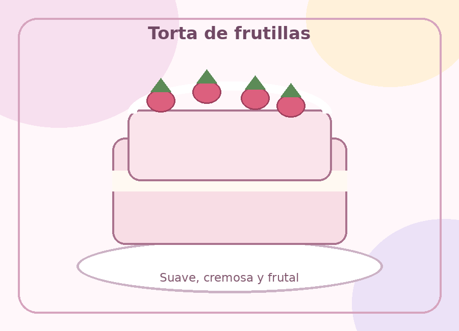
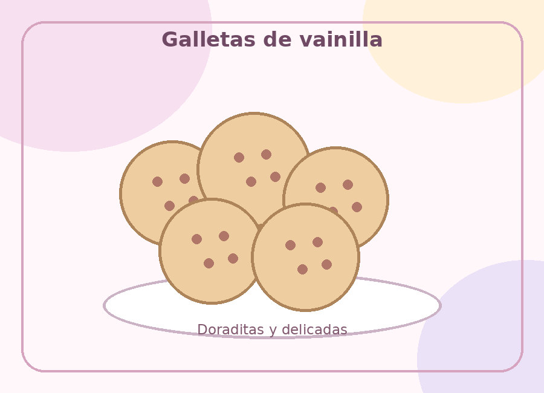
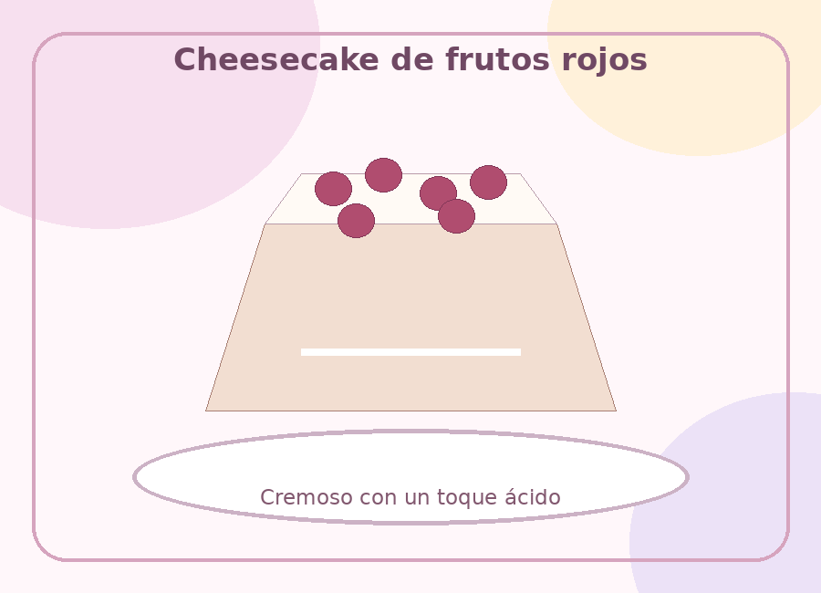
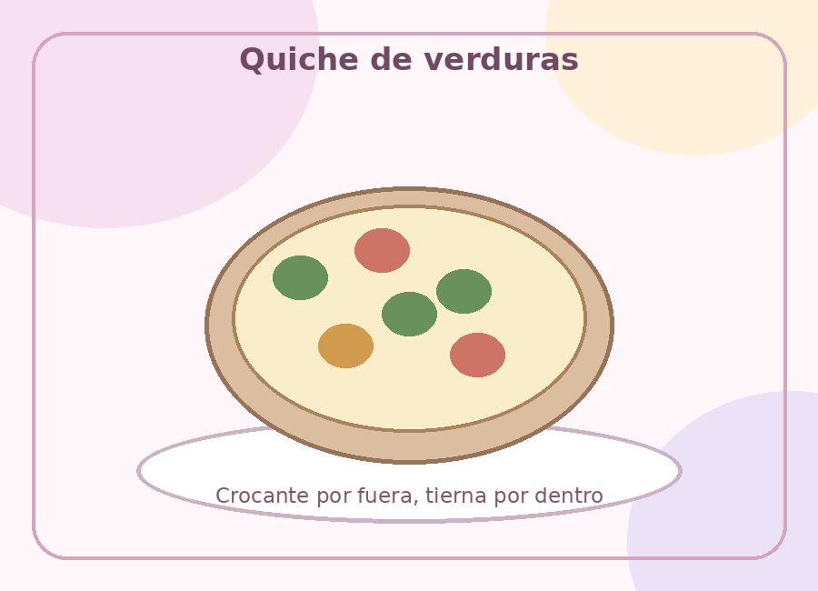
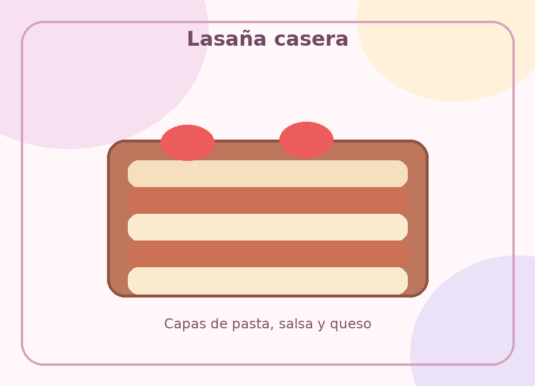
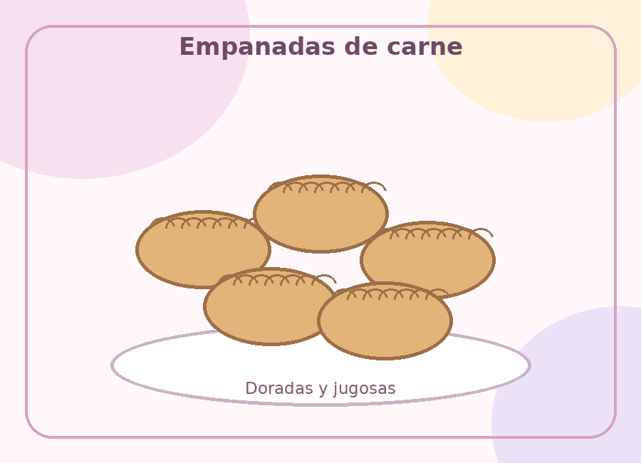

Nuestro recetario
Elegí tu momento favorito
Seleccioná una categoría para descubrir las recetas disponibles.
DULCES
Pequeños placeres
Para acompañar un café, celebrar o simplemente darse un gusto.


Frutos rojos
Cheesecake de frutos rojos
Textura cremosa con una cubierta fresca y ácida.
Descargar receta PDF ↗
SALADAS
Sabores para compartir
Preparaciones caseras, reconfortantes y llenas de sabor.



AM
Quién mantiene el sitio
Hola, soy Amelia ✦
Soy Amelia Martínez, cocinera aficionada y creadora de este pequeño recetario. Mantengo el sitio y actualizo las recetas con nuevas ideas, notas de cocina y preparaciones de temporada.
♡ Cocina casera✿ Recetas simples✦ Hecho en Argentina
Contacto
¿Querés decirme algo?
Podés escribirme para sugerir una receta, compartir una idea o simplemente saludar.
✉ hola@dulceysalado.example